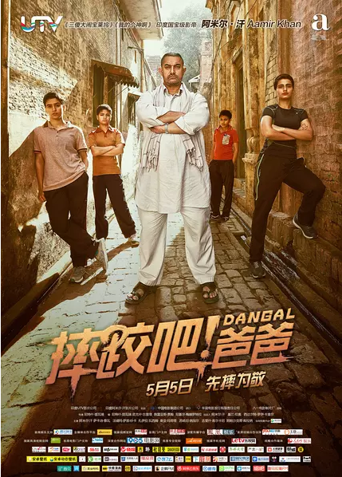

摔跤吧,爸爸！

- 阿米尔·汗 Aamir Khan
- 饰 马哈维亚·辛格·珀尕 Mahavir Singh Phogat
- 法缇玛·萨那·纱卡 Fatima Sana Shaikh
- 饰 吉塔·珀尕 Geeta Phogat
- 桑亚·玛荷塔 Sanya Malhotra
- 饰 芭比塔·库马尔·珀尕 Babita Kumar Phogat
- 沙克希·坦沃 Sakshi Tanwar
- 饰 达雅·考尔 Daya Kaur
- 泽伊拉·沃西姆 Zaira Wasim
- 饰 小吉塔
- 苏哈妮·巴特纳格尔 Suhani Bhatnagar
- 饰 小芭比塔
剧情介绍
马哈维亚（阿米尔·汗 Aamir Khan 饰）曾经是一名前途无量的摔跤运动员，在放弃了职业生涯后，他最大的遗憾就是没有能够替国家赢得金牌。马哈维亚将这份希望寄托在了尚未出生的儿子身上，哪知道妻子接连给他生了两个女儿，取名吉塔（法缇玛·萨那·纱卡 Fatima Sana Shaikh 饰）和巴比塔（桑亚·玛荷塔 Sanya Malhotra 饰）。让马哈维亚没有想到的是，两个姑娘展现出了杰出的摔跤天赋，让他幡然醒悟，就算是女孩，也能够昂首挺胸的站在比赛场上，为了国家和她们自己赢得荣誉。
就这样，在马哈维亚的指导下，吉塔和巴比塔开始了艰苦的训练，两人进步神速，很快就因为在比赛中连连获胜而成为了当地的名人。为了获得更多的机会，吉塔进入了国家体育学院学习，在那里，她将面对更大的诱惑和更多的选择。
参考豆瓣